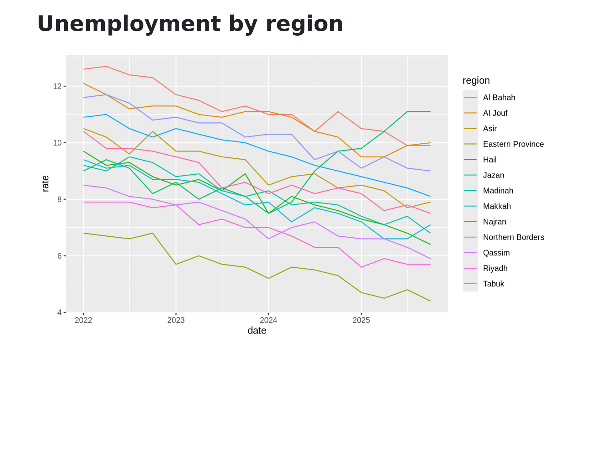
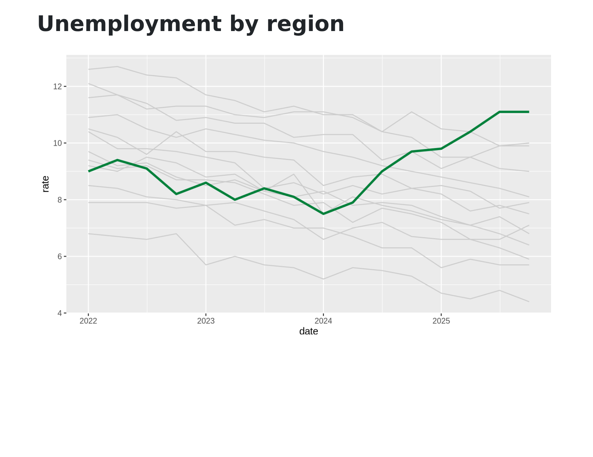
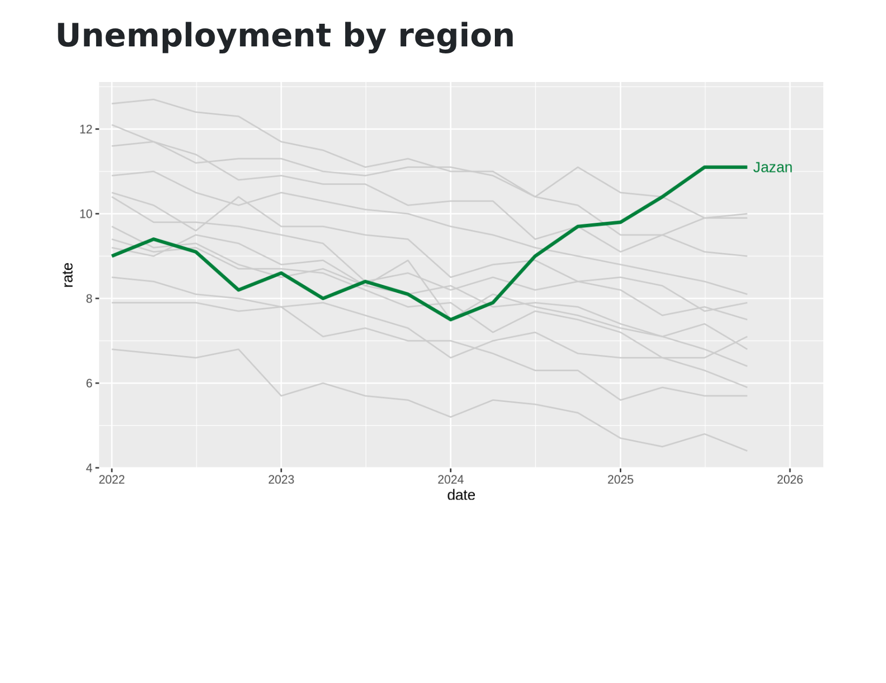
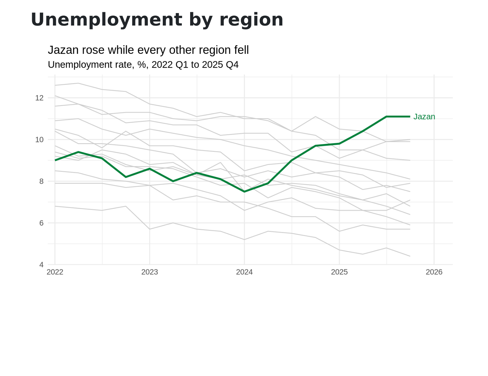

خاتمة · السرد بالبيانات
من رسم إلى رسالة
story.qmd
الملف story.qmd فارغ، نبدأ من الصفر
---
title: "Unemployment by region"
format:
html:
embed-resources: true
execute:
echo: false
---
```{r}
#| include: false
library(tidyverse)
rates <- read_csv("unemployment.csv") |>
filter(region != "Kingdom")
up <- rates |>
group_by(region) |>
summarise(change = last(rate) - first(rate)) |>
filter(change > 0) |>
pull(region)
jazan_end <- rates |>up_end <- rates |>
filter(region == "Jazan") |> filter(region %in% up) |>
slice_tail(n = 1)
```
```{r}
#| fig-width: 8
#| fig-height: 4.5
ggplot(rates, aes(date, rate, colour = region)) +ggplot(rates, aes(date, rate, group = region)) +
geom_line() geom_line(colour = "grey80") +
geom_line(data = filter(rates, region == "Jazan"), geom_line(data = filter(rates, region %in% up),
colour = "#00803A", linewidth = 1.2) colour = "#00803A", linewidth = 1.2) +
geom_text(data = jazan_end, aes(label = region), geom_text(data = up_end, aes(label = region),
hjust = -0.15, colour = "#00803A") +
scale_x_date(expand = expansion(mult = c(0.02, 0.12))) scale_x_date(expand = expansion(mult = c(0.02, 0.12))) +
labs(title = "Jazan rose while every other region fell", labs(title = str_glue("{up} rose while every other region fell"),
subtitle = "Unemployment rate, %, 2022 Q1 to 2025 Q4",
x = NULL, y = NULL) +
theme_minimal(base_size = 13)
```





1
13 خطًا ملوّنًا ومفتاح ألوان: رسم استكشافي. يفيدك أنت عشان تلقى القصة، لكن حطّه قدّام المدير وأول سؤال بيجيك: وين أطالع؟
2
وهذا جوابنا: الرمادي للسياق، ولون واحد للفكرة. المناطق كلها باقية في الرسم، لكن العين تروح على طول لجازان.
3
نكتب الاسم عند نهاية الخط، بدل مفتاح ألوان يخلّي المدير يروح ويرجع بعينه عشان يفكّه.
4
العنوان يقول النتيجة، والعنوان الفرعي يحمل الوحدة والفترة، وكل ما لا يخدم الفكرة نشيله. نفس البيانات، والحين صارت حجّة.
5
بقي سؤال المدير الثاني: متأكد؟
up محسوب من البيانات، والتلوين والاسم والعنوان كلها تقرأ منه. في الربع القادم تنفحص العبارة من جديد، ما نفترضها.